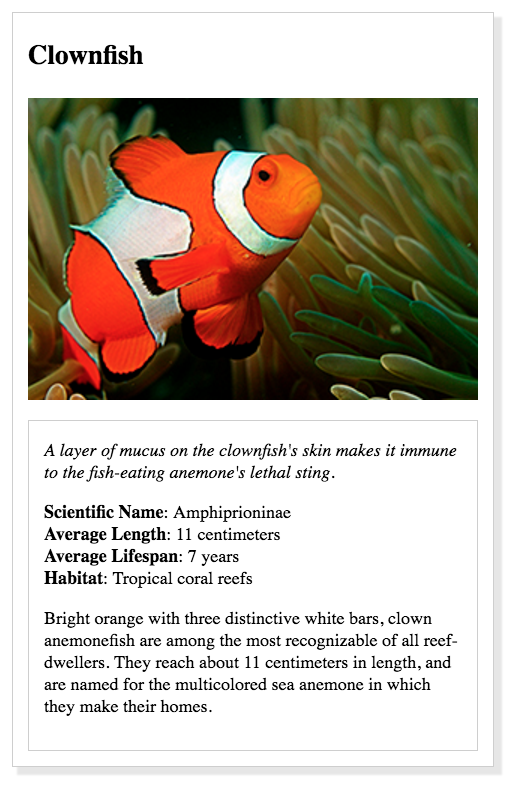
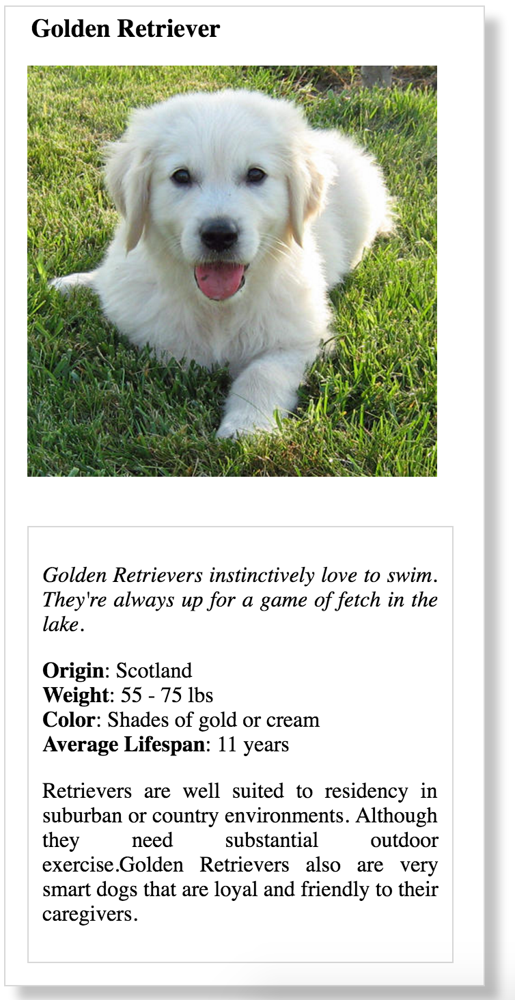

Recreating a webpage from a design Prototype
This Project is a part of Udacity Front-end Nanodegree Program.
The goal of the project is to create a webpage that looks exactly like the provided Photoshop Document using HTML and CSS
Below is the psd file provided

Requirments Specified:
- italicized text for the animal's interesting fact
- bolded labels for the animal's list items (e.g. 'Habitat')
- no dots for the animal's list items
- border around the animal's name, image, and information
- border around the animal's information
- spacing between the animal's name, image, and information (you will need to use the property padding)
- image with a width of 300 pixels
- Use alt attribute to describe image
This is the final output

Github repo
Fun Fact: This project was my first HTML, CSS project